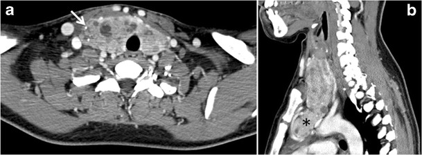

Ficha del catálogo
Bocio multinodular con extensión endotorácica
- Sistema
- Endocrino
- Modalidad
- TC
- Región
- Cuello y mediastino superior
- Dificultad
- Intermedio
Consiste en el crecimiento glandular con formación de múltiples nódulos de tamaño desigual, muchas veces con degeneración quística, hemorragia y calcificación. Es frecuente en mujeres de edad avanzada y puede permanecer asintomático durante años. Cuando progresa hacia el mediastino produce síntomas compresivos sobre la tráquea, el esófago y las estructuras venosas.
Técnica
La tomografía cervicotorácica delimita la extensión caudal del bocio, su relación con los vasos y el grado de compresión traqueal, datos indispensables para planear la cirugía. Se prefiere el estudio sin contraste yodado cuando se prevé tratamiento con yodo radiactivo, ya que la carga de yodo lo retrasa varias semanas. El ultrasonido sigue siendo la herramienta inicial para caracterizar los nódulos accesibles del cuello.
Qué observar
- Glándula aumentada de tamaño con múltiples nódulos de densidad heterogénea
- Calcificaciones groseras y áreas quísticas por degeneración de nódulos antiguos
- Desplazamiento y estrechamiento de la luz traqueal en el plano axial
- Extensión del tejido glandular por debajo del opérculo torácico
- Continuidad del componente mediastínico con la glándula cervical
- Compresión o desplazamiento de las venas braquiocefálicas y del esófago
Hallazgos
La tiroides aparece globalmente agrandada y de contorno lobulado, con nódulos hipodensos e hiperdensos alternantes, calcificaciones periféricas y focos de degeneración quística. El componente endotorácico conserva la densidad basal elevada propia del tejido tiroideo y muestra continuidad anatómica con los lóbulos cervicales. La tráquea suele estar desviada hacia el lado opuesto y comprimida en sentido transversal, en ocasiones con aspecto de vaina de sable.
Perlas
La densidad espontánea alta del tejido tiroideo, debida a su contenido de yodo, permite reconocer una masa mediastínica superior como bocio incluso sin contraste. Ese dato, junto con la continuidad con la glándula cervical, evita confundirla con una masa tímica o ganglionar.
Diagnóstico diferencial
- Masa tímica
- Se sitúa en el mediastino anterior sin continuidad con la tiroides y su densidad basal es la del tejido blando.
- Linfoma mediastínico
- Forma conglomerados ganglionares homogéneos que engloban vasos, sin calcificaciones groseras ni densidad yodada.
- Carcinoma tiroideo
- Presenta márgenes infiltrativos, invasión de estructuras vecinas y adenopatías con necrosis o calcificaciones finas.
- Tiroides ectópica mediastínica
- Carece de continuidad con la glándula cervical y recibe irrigación desde vasos mediastínicos.
Simuladores
- Lipomatosis mediastínica que ensancha el mediastino superior
- Vasos venosos dilatados en el síndrome de vena cava superior
- Quiste broncogénico de contenido denso adyacente a la tráquea
Por modalidad
- RX
- Muestra ensanchamiento del mediastino superior con desviación traqueal y borramiento del contorno paratraqueal.
- TC
- Define la extensión caudal, el grado de estenosis traqueal y la relación con los vasos mediastínicos.
- US
- Caracteriza los nódulos cervicales y guía la punción, pero no valora el componente retroesternal.
Protocolo
Tomografía de cuello y tórax en adquisición helicoidal con cortes finos y reconstrucciones coronales y sagitales para medir la extensión craneocaudal. Se documenta el diámetro traqueal mínimo y el nivel anatómico al que se produce. El uso de contraste yodado se valora caso por caso, evitándolo si está prevista una terapia con yodo radiactivo.
Clasificación
No hay una clasificación radiológica unificada, aunque suele describirse el bocio como cervical o con extensión endotorácica según rebase o no el opérculo torácico, y se precisa si el componente mediastínico es anterior o posterior. Los nódulos individuales accesibles al ultrasonido se estratifican con los sistemas TI-RADS.
Errores frecuentes
- No incluir el tórax en el estudio y subestimar la extensión mediastínica
- Omitir la medida del calibre traqueal mínimo que necesita el cirujano
- Administrar contraste yodado sin comprobar si se planea terapia con yodo radiactivo

bocio multinodular tiroides extensión endotorácica compresión traqueal mediastino superior tomografía cervical endocrino